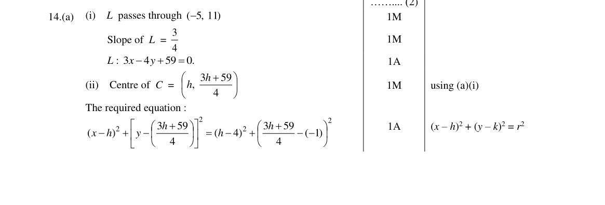

2015 DSE 數學 P1 Q14 答案＋詳解
題目（中文卷）
點 ( P ) 及點 ( Q ) 的坐標分別為 ( (4, -1) ) 及 ( (-14, 23) ) 。
(a) 設 ( L ) 為 ( PQ ) 的垂直平分線。
(i) 求 ( L ) 的方程。
(ii) 假定 ( G ) 為 ( L ) 上的一點。將 ( G ) 的 ( x ) 坐標記為 ( h )。設 ( C ) 為一圓，其圓心為 ( G ) 且通過 ( P ) 及 ( Q ) 。證明 ( C ) 的方程為 ( 2x^2 + 2y^2 - 4hx - (3h + 59)y + 13h - 93 = 0 ) 。
(6 分)
(b) 點 ( R ) 的坐標為 ( (26, 43) ) 。利用 (a)(ii)，或其他方法，求通過 ( P ) 、( Q ) 及 ( R ) 的圓的直徑。
(3 分)
N. (a) (3 分) N. (b) (3 分) N. (i) (3 分) N. (ii) (3 分)
乙部（35分）
English version（英文卷題目）
The coordinates of the points ( P ) and ( Q ) are ( (4, -1) ) and ( (-14, 23) ) respectively.
(a) Let ( L ) be the perpendicular bisector of ( PQ ).
(i) Find the equation of ( L ).
(ii) Suppose that ( G ) is a point lying on ( L ). Denote the ( x )-coordinate of ( G ) by ( h ). Let ( C ) be the circle which is centred at ( G ) and passes through ( P ) and ( Q ).
Prove that the equation of ( C ) is ( 2x^2 + 2y^2 - 4hx - (3h + 59)y + 13h - 93 = 0 ).
(6 marks)
(b) The coordinates of the point ( R ) are ( (26, 43) ). Using (a)(ii), or otherwise, find the diameter of the circle which passes through ( P ), ( Q ) and ( R ).
(3 marks)
官方評卷參考（Marking Scheme）

考評報告
良好。部分考生誤以為 L 平行於 PQ,而其他部分考生未有求 PQ 的中點,因此未能給出正確答案。平平。很多考生未能完成證明,並只證明圓 C 通過 P 及 Q。甚差。大部分考生誤以為 PQ 為圓 C 的一直徑,而很多考生在求圓 C 的方程時出現困難。